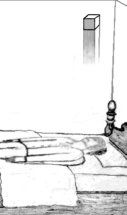
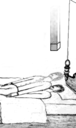
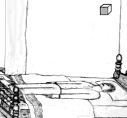
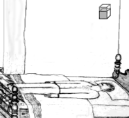
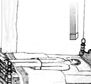
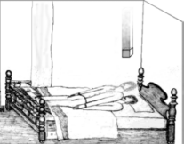
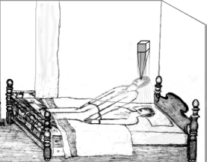

Many people try to induce OBEs without success because they don't know what to do. Unfortunately, most books on the subject don't contain instructions. The few books that contain instructions are typically vague and incomplete. In the exercises given with each chapter, I have already suggested many things to try. In this chapter, I want to fill in some of the gaps, and also provide a detailed description of my most successful method. Of course, I can't guarantee positive results. Your success depends on the amount of effort you put forth.
Most OBE authors agree that your subconscious takes you out of your body every night. With practice you can use this to your advantage: You can train your subconscious to "wake you up" after it has left the body. I have used many methods for impressing this idea on my subconscious: affirmations, reading books, listening to subliminal OBE suggestion tapes, playful visualizations and listening to music that has OBE-suggestive words.
The first method, affirmations or self-suggestion, is to tell yourself, "I want to have an out-of-body experience," "I want to leave my body" or similar suggestions. The best times to do this are right before you fall asleep and especially right after you wake up in the morning. At these times you are in close contact with your subconscious. I wake up very slowly. For about a half hour I'm in contact with my subconscious mind. When I give myself suggestions then, they are very effective. Make these affirmations several times a day.
The second method is to read OBE books. I usually have more OBEs when I've recently been reading a book on astral projection. Reading about OBEs and thinking about them as you read makes an impression on your subconscious mind that can often be more effective than self-suggestion.
The third method is to use suggestion tapes. The Monroe Institute now has sets of "Gateway" tapes to aid the would-be astral traveler. Valley of the Sun Publishing has a set called "Astral Projection" which contains one hypnosis tape and one subliminal suggestion tape. Other tapes are also available.
The fourth method is to use playful imagination. Affirmations that use visualization are even better than verbal affirmations. Visualize yourself separating from the body. As you do, think to yourself, "Yes, I can do that." Imagine elaborate scenes where you are either flying through valleys like a glider, or shooting away from your body into outer-space. Again, this should be done frequently throughout the day, and especially right after you wake up in the morning.
The fifth method is to listen to music with words that suggest OBEs. I made a tape for myself, full of such songs by various artists. The songs might not be about OBEs, but they still remind me of them enough to make an impression on my subconscious mind. Some examples are: "Kashmir" by Led Zeppelin, "Astral Traveler" by Yes, "The Wall" by Kansas, "Lights" by Styx, "Fly By Night" by Rush and "Backwards Traveler" by Paul McCartney.
The best time to attempt an OBE is in the morning, after you have woken up naturally (i.e., not from an alarm clock.) Since most of us work during the week, it's easier to try on the weekends. Give your body plenty of rest. Each person needs a different amount of sleep. The trick is to make your body tired enough to stay in a relaxed state, but not too tired. If I don't sleep enough, I'm too tired and fall back into a deep sleep while practicing. If I oversleep and then practice, I am too wide awake and can't focus well. The body should be well rested but relaxed, and the mind must be alert.
When the time comes to practice, try to detect how tired you are. If you're too tired, stretch a little in bed or shake the sleep off. Some people may want to get up first and have a cup of coffee first. This will usually keep you from falling back to sleep during practice. It is better to wake yourself up completely before starting.
Music is wonderful for relaxation and calming the mind. It's okay to listen to relaxing music during your OBE practice, but this can also work against you: Listening to external sounds can distract you from focusing inward. Also, if you listen to music before bedtime, you may be too relaxed and sleepy to practice the next morning.
When you practice, make sure you have good circulation. Get into a position where your limbs won't "fall asleep" because of poor circulation.
Make sure you won't be distracted during practice. Keep your windows closed to keep noises out, unplug the telephone, turn off all televisions, radios and other noisy things. Don't set any time limits on your practice. It is counter-productive to check the time and wonder if your time limit is up. Also, make sure your bladder is empty before practice; The need to go to the bathroom can ruin a good practice.
The next important condition for OBE induction is a completely relaxed physical body. Relaxation is important because if you aren't relaxed, you'll have too much consciousness focused in your body. Laboratory tests on astral travelers have shown (with the help of BSR and GSR skin resistance monitors) that the physical body is more relaxed during an OBE than during sleep. Ideally, your physical body should be completely relaxed in every respect during practice. I recommend practicing relaxation every day until you can completely relax your physical body in a few minutes.
Relax your body from limb to limb, working from your feet up to your head, until even your face is completely relaxed. Use any technique you are comfortable with to relax completely. If you don't know any relaxation techniques, do this: Systematically tighten each muscle and make it tense until there is a slight fatigue, then let go and feel the muscle relax. After you've relaxed every muscle, start over and check every muscle again.
You may notice that the more relaxed your body is, the less you can actually "feel" it. Encourage this feeling: While you're relaxing, pretend as vividly as you can that you do not have your left arm; as if it's been cut off and you can't feel it. When the sensation of having no arm becomes quite real to you, that arm is very relaxed. Next, pretend that your other arm does not exist. Next, your legs. Have some playful fun by pretending that your arms are in different positions, and see how vividly you can imagine these things. If you are able to lose all feeling in your arms and legs, or imaginarily feel they are in different positions, your body is very relaxed.
Next, relax your face completely. Here's one way to relax your face: With your eyes closed, stare deeper and deeper into the blackness, while very slowly tightening your eyebrows and rolling your eyes up slightly until your eyebrow muscles become tired. Then completely relax your facial muscles for about 15 seconds. Repeat the process again until your eyebrow muscles are tired again, and relax again for another 15 seconds. Repeat this process about six or seven times. Completely relax your whole body again and then try to make your mind blank and relaxed too. The vibrations may even come at this point, making the rest of the process unnecessary! After you're completely relaxed, pay no more attention to your body.
This is the Single Most Important step. There are five key points to focusing your mind for OBE induction. They are: state of mind, realism, motion, receptivity and passivity.
When you are trying to leave your body the most important thing is your state of mind. When I've been in an "ideal" state of mind, leaving my body seems like child's play, as easy and natural as breathing. But when I'm not in that state of mind it seems very difficult. I can't "teach" this state of mind but I can describe what it's like. Once you've experienced astral projection you'll know what state of mind to aim for. The best state of mind is one in which you are a quiet, completely passive, single-minded observer. In this passive state, your mind does not wander. You are not emotional. You are not analytical either. You are merely an observer. Visualization is important in many OBE techniques and this passive state of mind makes it easier to visualize images a long time without your mind "wandering."
The second point, realism, has to do with the degree of focus. This world seems real to us because we are so focused here. You should learn to focus outside your body to such a degree that it all becomes real. Focus your mind into that single thread of consciousness.
The third point, motion, concerns the swaying motion you feel within your body. I start an inner "swaying" sensation in my imagination that later becomes quite real. Then I use the momentum of the swaying to propel myself out of my body. Pretend that your body is gently swaying back and forth, or left to right in a regular motion. Try to make this swaying feeling as vivid as possible.
The fourth point is receptivity. This receptive state of mind is important in calling or inducing the vibrations. You should learn to make yourself receptive to whatever comes during practice.
The fifth point, passivity, is also very important. The more passive you are, the easier it is to enter the OBE state. As long as you have a conscious "controlling interest" in your experience, you are too focused in this reality. Develop the attitude of doing the exercises, not because you are interested in watching them, but just for passive reasons: Just to see what happens next, or just for the sake of doing it. While practicing, you should only be concerned with the current moment in time. Be accepting of what comes. Try to assume an attitude where you really don't care what will happen. Be completely in the present moment, with no thoughts of what will happen next. The American Heritage Dictionary defines "passive" as:
1. Receiving or subjected to an action without responding or initiating an action in return. 2. Accepting without objection or resistance; compliant. 3. Not participating, acting, or operating; inert....
By this definition, you should be in a state where you can be subjected to weird feelings without responding, physically or mentally. No matter what hits you, you should be in such a passive state that, when something hits you, you think, "Oh. That's nice," and just continue to lie there and visualize.
In this passive state, you can initiate actions (like the visualizations) without responding to them. You fall asleep by becoming interested in, and responding to your own thoughts and visualizations. If you can initiate that state and keep your consciousness out of that dream-trap, you can retain your consciousness after it leaves your body. You just want to become a passive observer.
I've talked before about needing to suspend a certain portion of your consciousness to leave your body. Suspend the portion that has a vested interest in what's happening.
Slow your thoughts and bring yourself into that passive and receptive state of mind. Clear your mind of all thoughts: There are many techniques for doing this. If you don't have a method, try the following: With your eyes closed, pretend that you're looking for something that might appear directly in front of you. Just quietly watch your mental viewing screen. Stare into the blackness.
The next step is to "wander the edge of consciousness," exploring the border between waking and sleeping. Allow yourself to start falling asleep, but then "catch" yourself and rouse yourself again and make sure you're fully conscious. Let yourself start to fall asleep again, this time allowing yourself to get a little closer toward sleep, then rouse yourself again. Do this several times until your body is very relaxed and your mind is in that "passive" framework that I discussed.
Next, visualize a small object, such as a small cube, about six feet directly in front of your face. Visualize this as clearly as you can. Don't continue until you can see this object clearly in your mind's eye.

Then begin to move the object back and forth so that it appears to come a little bit closer to you and then moves back to where it began. At first, visualize only a tiny amount of movement, as if the object is merely slowly swaying toward you and away from you.
Keep the object swaying constantly. Don't let it stop moving.
Keeping the object in motion will help to stabilize the image in your
mind and give it more realism.

Slowly increase the distance the object sways. Keep swinging
the image back and forth toward you, each time bringing it a bit closer
to you. As you do this, the image may seem to become more real. Make
sure your visualization has a sense of perspective and depth. Each time
the object comes closer, it should look bigger. Each time the object
pulls away, it should look smaller. Remember, you must also keep
that passive, quiesced state of mind during the entire exercise.

Try to feel as if you are swaying in the opposite direction as the object. Imagine the object has a strong gravity which affects your swaying. As the object swings closer to you, you are pulled toward it. As it swings away from you, you sway back to your original position within your body.
As the object gets closer and closer with each swing, feel its gravity pull you more and more in its direction.


After the image becomes very vivid, when it swings close to
you, "grab" onto the image with your mind. As the image swings away,
your consciousness will follow it and will be consciously pulled away
from your body.


At this point you will be out of your body. Then you can "let go" of that quiesced state of mind, expand your consciousness and you will be very wide awake and very alert. You are then free to explore the nonphysical world!
It is important to examine your consciousness during the experience to make sure that you are not dreaming. During the experience, ask yourself, "Is this really happening, or is it a dream?" After you return to your body recall how conscious you were during the experience.
Learning to leave your body is something that takes a lot of time, practice and patience. Don't expect results over night. This chapter has a lot of information to absorb at once. You may spend several attempts just trying to remember all the subtleties involved. Some people don't have any OBEs until they have spent years trying. And some people don't get results because they try too hard; learn to let go. The good news is, the first OBE is the hardest. Once you've had an OBE, it's easier to induce more.
Also, don't be afraid to experiment and try new things.
Develop your own techniques. Use whatever works best for you.
Click here to view next chapter
Or click here to return to the index